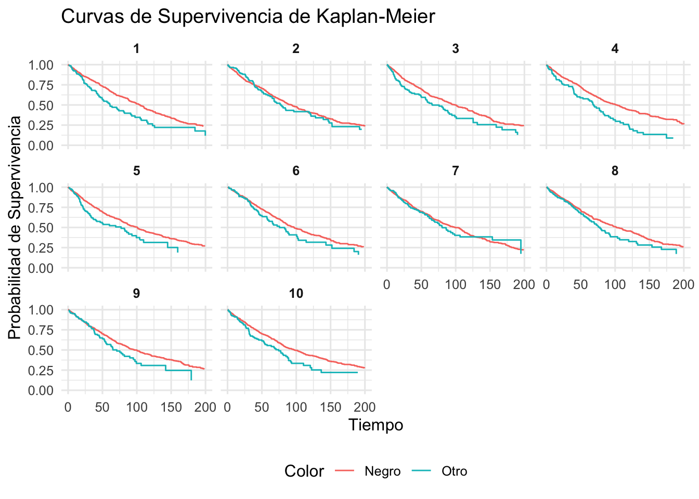

Rows: 22,356
Columns: 9
$ id <fct> A730601, A679549, A683656, A709749, A733551, A756485, A7…
$ days_to_event <int> 1, 25, 4, 41, 9, 4, 4, 5, 24, 2, 34, 27, 3, 151, 106, 4,…
$ date_out <fct> 07/08/2016 09:00:00 AM, 06/16/2014 01:54:00 PM, 07/17/20…
$ out_event <fct> Transfer, Transfer, Adoption, Transfer, Transfer, Adopti…
$ date_in <fct> 07/07/2016 12:11:00 PM, 05/22/2014 03:43:00 PM, 07/13/20…
$ in_event <fct> Stray, Stray, Stray, Stray, Stray, Stray, Stray, Owner S…
$ breed <fct> Domestic Shorthair Mix, Domestic Shorthair Mix, Snowshoe…
$ color <fct> Blue Tabby, Black/White, Lynx Point, Calico, Brown Tabby…
$ intake_age <int> 7, 1, 2, 12, 1, 1, 2, 24, 1, 3, 4, 12, 1, 7, 0, 12, 1, 1…Adopciones de Gatos - Análisis de Supervivencia
Proyecto Final
Introducción
El presente análisis se basa en el libro Statistical Rethinking de Richard McElreath (segunda edición), el cual introduce los modelos de supervivencia como herramientas adecuadas para estudiar eventos contables en el tiempo, especialmente cuando el resultado de interés es la duración hasta que ocurre un evento. Estos modelos son particularmente útiles en contextos donde algunas observaciones están censadas, es decir, no se ha observado aún el evento de interés, pero se tiene información parcial sobre el tiempo de espera.
El objetivo de este estudio es evaluar si el color del gato influye en el tiempo que tarda en ser adoptado desde su ingreso a un albergue. Esta pregunta se enmarca dentro de un modelo de supervivencia con tiempos de espera que se modelan mediante una distribución exponencial, y que considera adecuadamente los casos censados (gatos que no fueron adoptados durante el periodo de observación).
Para ello, se emplea el conjunto de datos AustinCats, incluido en el paquete rethinking, que contiene información detallada sobre más de 22,000 gatos atendidos en un refugio animal. A continuación, se presenta una descripción general de la estructura del conjunto de datos:
Tratamiento de variables
Se creó una variable binaria color_group que clasifica a los gatos como “Black” si su color es exactamente negro, y “Other” en cualquier otro caso. A partir de esta variable, se calculó la proporción de cada grupo: 13.3% de los gatos son negros y 86.7% de otro color. La gráfica de barras resultante ilustra estas proporciones, destacando visualmente la menor representación de gatos negros en el refugio.

Siguiendo el tratamiento propuesto por McElreath, se transformó la variable out_event en dos indicadores binarios: adopted, que toma el valor 1 si el gato fue adoptado, y censored, que toma el valor 1 si el evento fue distinto a adopción. Este enfoque permite distinguir entre observaciones completas y censuradas, lo cual es fundamental en modelos de supervivencia.

En este caso, el 50.8% de los gatos fueron adoptados, mientras que el 49.2% fueron censurados. Estos últimos incluyen tanto a los gatos que permanecen en el refugio como a aquellos que salieron por otras razones. Esta proporción cercana al 50% resalta la importancia de incorporar adecuadamente la censura por la derecha para evitar sesgos en la estimación de los tiempos de espera hasta la adopción.
Modelo Generativo
DAG
grViz("
digraph {
graph [ranksep = 0.2, rankdir = LR]
node [shape=plaintext]
U [shape=circle]
Color
Days
Adoption
edge [minlen = 3]
U -> Adoption
Color -> Adoption
Adoption -> Days
}
", width = 400)En este DAG:
- U representa factores no observados (por ejemplo, personalidad del gato o condiciones del adoptante).
- Color representa el color del gato, la variable de interés observada.
- Adoption es la tasa de adopción
- Days es el tiempo observado hasta la adopción (o censura), generado a partir de la tasa Adoption.
Este esquema refleja la suposición de que tanto el color como otros factores no observados influyen en la tasa de adopción, la cual a su vez determina el tiempo hasta la adopción o censura.
El fenómeno que se busca modelar es el tiempo que tarda un gato en ser adoptado desde su ingreso al refugio. Este tipo de variable —tiempo hasta un evento— es típicamente abordado mediante modelos de supervivencia. En este caso, se asume que los tiempos de espera siguen una distribución exponencial, adecuada cuando se supone que la probabilidad de adopción es constante a lo largo del tiempo, es decir, que la “tasa de adopción” no depende del tiempo ya transcurrido.
El tiempo de espera hasta la adopción se modela como una variable aleatoria continua con distribución exponencial: \[D_i \sim \text{Exponencial}(\lambda_i)\] donde:
- \(D_i\): tiempo hasta la adopción o censura del gato \(i\),
- \(\lambda_i = \frac{1}{\mu_i}\): tasa de adopción, inversa del tiempo medio,
- \(log(\mu_i) = \alpha_{c[i]}\): tiempo medio depende del grupo de color (negro u otro), con \(\alpha_1\) para negros y \(\alpha_2\) para otros. Además:
- Si el gato no fue adoptado (censura), se simula el tiempo de espera hasta cierto umbral, y se marca como censado.
- La probabilidad de adopción condicionada a los días observados, si censado, se obtiene con la complementaria de la CDF: \[Pr(D_i > d_i | \lambda_i) = exp(-\lambda_i d_i)\]
Simulación
La siguiente función simula una muestra de N gatos en un refugio:
sim_cats <- function(N = 10000, alpha_black = log(70), alpha_other = log(50), p_black = 0.3, p_censored = 0.49) {
# 1 = negro, 2 = otro
color_id <- rbinom(N, 1, p_black) + 1
# Parametrización
alpha <- c(alpha_black, alpha_other)
mu <- exp(alpha[color_id])
lambda <- 1 / mu
# Simular tiempos verdaderos
time_true <- rexp(N, rate = lambda)
# Asignar censura de manera aleatoria (p_censored de los casos)
censored <- rbinom(N, 1, p_censored)
# Tiempo observado es igual al real si fue adoptado, o censurado artificialmente
# Para simplificar, no truncamos el tiempo observado
adopted <- 1L - censored
time_obs <- time_true # todos los tiempos son observados hasta ese punto
tibble(
color_id = color_id,
mu = mu,
lambda = lambda,
time_true = time_true,
time_obs = time_obs,
adopted = adopted,
censored = censored
)
}
grViz("
digraph {
graph [rankdir=LR, nodesep=1]
node [shape=box, style=filled, fillcolor=LightGray]
color_id [label='color_id']
mu [label='mu']
lambda [label='lambda']
time_true [label='time_true']
time_obs [label='time_obs']
adopted [label='adopted']
censored [label='censored']
color_id -> mu
mu -> lambda
lambda -> time_true
time_true -> time_obs
time_obs -> adopted
time_obs -> censored
}
")grViz("
digraph {
graph [ranksep = 0.2, rankdir = LR]
node [shape=plaintext]
Color
Days
Adoption
edge [minlen = 3]
Color -> Adoption
Adoption -> Days
}
", width = 400)graph LR
U((U)) --> A
C --> A
A --> D
style U fill:#fff,stroke:#333,stroke-width:2px
style A fill:none,stroke:none
style C fill:none,stroke:none
style D fill:none,stroke:none
linkStyle 0 stroke-width:2px,stroke:#333
linkStyle 1 stroke-width:1px,stroke:#333
linkStyle 2 stroke-width:1px,stroke:#333
%% Adjust spacing (similar to ranksep)
%%{init: {'config': {'rankSpacing': 20}}}%%
grViz("
digraph {
graph [ranksep=0.5, rankdir=LR]
node [shape=box, fontname=Helvetica]
Color [label='Color ID']
mu [label='μᵢ (mean time)', shape=ellipse]
lambda [label='λᵢ (rate)', shape=ellipse]
A [label='Aᵢ (Adopted or Censored)']
D [label='Dᵢ (Time to Event)']
Color -> mu
mu -> lambda
lambda -> D
A -> D
}
")Modelo de adopción por color
cats <- cats |>
mutate(
color_id = if_else(color == "Black", 1L, 2L),
days = as.numeric(days_to_event)
)
dat_stan_simple <- list(
N = nrow(cats),
days = cats$days,
color = cats$color_id
)
stan_model_code_simple <- "
data {
int<lower=1> N;
real<lower=0> days[N];
int<lower=1,upper=2> color[N];
}
parameters {
vector[2] alpha;
}
model {
for (i in 1:N) {
real mu = exp(alpha[color[i]]);
days[i] ~ exponential(1 / mu);
}
}
"
compiled_model_simple <- rstan::stan_model(model_code = stan_model_code_simple)Trying to compile a simple C fileRunning /Library/Frameworks/R.framework/Resources/bin/R CMD SHLIB foo.c
using C compiler: ‘Apple clang version 17.0.0 (clang-1700.0.13.3)’
using SDK: ‘MacOSX15.4.sdk’
clang -arch arm64 -I"/Library/Frameworks/R.framework/Resources/include" -DNDEBUG -I"/Library/Frameworks/R.framework/Versions/4.3-arm64/Resources/library/Rcpp/include/" -I"/Library/Frameworks/R.framework/Versions/4.3-arm64/Resources/library/RcppEigen/include/" -I"/Library/Frameworks/R.framework/Versions/4.3-arm64/Resources/library/RcppEigen/include/unsupported" -I"/Library/Frameworks/R.framework/Versions/4.3-arm64/Resources/library/BH/include" -I"/Library/Frameworks/R.framework/Versions/4.3-arm64/Resources/library/StanHeaders/include/src/" -I"/Library/Frameworks/R.framework/Versions/4.3-arm64/Resources/library/StanHeaders/include/" -I"/Library/Frameworks/R.framework/Versions/4.3-arm64/Resources/library/RcppParallel/include/" -I"/Library/Frameworks/R.framework/Versions/4.3-arm64/Resources/library/rstan/include" -DEIGEN_NO_DEBUG -DBOOST_DISABLE_ASSERTS -DBOOST_PENDING_INTEGER_LOG2_HPP -DSTAN_THREADS -DUSE_STANC3 -DSTRICT_R_HEADERS -DBOOST_PHOENIX_NO_VARIADIC_EXPRESSION -D_HAS_AUTO_PTR_ETC=0 -include '/Library/Frameworks/R.framework/Versions/4.3-arm64/Resources/library/StanHeaders/include/stan/math/prim/fun/Eigen.hpp' -D_REENTRANT -DRCPP_PARALLEL_USE_TBB=1 -I/opt/R/arm64/include -fPIC -falign-functions=64 -Wall -g -O2 -c foo.c -o foo.o
In file included from <built-in>:1:
In file included from /Library/Frameworks/R.framework/Versions/4.3-arm64/Resources/library/StanHeaders/include/stan/math/prim/fun/Eigen.hpp:22:
In file included from /Library/Frameworks/R.framework/Versions/4.3-arm64/Resources/library/RcppEigen/include/Eigen/Dense:1:
In file included from /Library/Frameworks/R.framework/Versions/4.3-arm64/Resources/library/RcppEigen/include/Eigen/Core:19:
/Library/Frameworks/R.framework/Versions/4.3-arm64/Resources/library/RcppEigen/include/Eigen/src/Core/util/Macros.h:679:10: fatal error: 'cmath' file not found
679 | #include <cmath>
| ^~~~~~~
1 error generated.
make: *** [foo.o] Error 1fit_simple <- rstan::sampling(compiled_model_simple, data = dat_stan_simple,
chains = 4, cores = 4, iter = 2000)Found more than one class "stanfit" in cache; using the first, from namespace 'rethinking'Also defined by 'rstan'Found more than one class "stanfit" in cache; using the first, from namespace 'rethinking'Also defined by 'rstan'Found more than one class "stanfit" in cache; using the first, from namespace 'rethinking'Also defined by 'rstan'Found more than one class "stanfit" in cache; using the first, from namespace 'rethinking'Also defined by 'rstan'post_simple <- as.data.frame(fit_simple)
mu_negro_simple <- exp(post_simple$`alpha[1]`)
mu_otro_simple <- exp(post_simple$`alpha[2]`)
library(tibble)
tibble(
Color = c("Negro", "Otro"),
Media = c(mean(mu_negro_simple), mean(mu_otro_simple)),
`IC 89% Inferior` = c(quantile(mu_negro_simple, 0.055), quantile(mu_otro_simple, 0.055)),
`IC 89% Superior` = c(quantile(mu_negro_simple, 0.945), quantile(mu_otro_simple, 0.945))
)# A tibble: 2 × 4
Color Media `IC 89% Inferior` `IC 89% Superior`
<chr> <dbl> <dbl> <dbl>
1 Negro 28.1 27.3 28.9
2 Otro 24.8 24.5 25.0El modelo de supervivencia exponencial indica que los gatos negros tardan, en promedio, más días en ser adoptados (28.1 días) en comparación con gatos de otros colores (24.8 días). Sin embargo, este resultado se basa únicamente en la variable observable del color. De acuerdo con el diagrama causal propuesto, existen factores no observados —como el comportamiento del gato, la actitud del adoptante o el estado de salud— que también podrían influir en la tasa de adopción. Por tanto, esta diferencia podría no deberse exclusivamente al color, sino a variables latentes no incluidas en el modelo actual.
Ajuste controlando la variable edad
Para estimar de manera más precisa el efecto del color del gato sobre el tiempo de adopción, se incluyó la edad al ingreso como variable de control en el modelo de supervivencia. Esto permite separar el efecto del color del posible sesgo que podría generarse si, por ejemplo, los gatos negros fueran sistemáticamente más jóvenes o mayores que los de otros colores.
cats <- cats |>
filter(!is.na(intake_age)) |>
mutate(
color_id = if_else(color == "Black", 1L, 2L),
age_std = as.numeric(scale(intake_age)), # edad estandarizada
days = as.numeric(days_to_event)
)
dat_stan <- list(
N = nrow(cats),
days = cats$days,
color = cats$color_id,
age = cats$age_std
)
# Modelo stan
stan_model_code <- "
data {
int<lower=1> N;
real<lower=0> days[N];
int<lower=1,upper=2> color[N];
real age[N];
}
parameters {
vector[2] alpha;
real beta_age;
}
model {
for (i in 1:N) {
real mu = exp(alpha[color[i]] + beta_age * age[i]);
days[i] ~ exponential(1 / mu);
}
}
"
compiled_model <- rstan::stan_model(model_code = stan_model_code)Found more than one class "stanfit" in cache; using the first, from namespace 'rethinking'Also defined by 'rstan'Found more than one class "stanfit" in cache; using the first, from namespace 'rethinking'Also defined by 'rstan'Trying to compile a simple C fileRunning /Library/Frameworks/R.framework/Resources/bin/R CMD SHLIB foo.c
using C compiler: ‘Apple clang version 17.0.0 (clang-1700.0.13.3)’
using SDK: ‘MacOSX15.4.sdk’
clang -arch arm64 -I"/Library/Frameworks/R.framework/Resources/include" -DNDEBUG -I"/Library/Frameworks/R.framework/Versions/4.3-arm64/Resources/library/Rcpp/include/" -I"/Library/Frameworks/R.framework/Versions/4.3-arm64/Resources/library/RcppEigen/include/" -I"/Library/Frameworks/R.framework/Versions/4.3-arm64/Resources/library/RcppEigen/include/unsupported" -I"/Library/Frameworks/R.framework/Versions/4.3-arm64/Resources/library/BH/include" -I"/Library/Frameworks/R.framework/Versions/4.3-arm64/Resources/library/StanHeaders/include/src/" -I"/Library/Frameworks/R.framework/Versions/4.3-arm64/Resources/library/StanHeaders/include/" -I"/Library/Frameworks/R.framework/Versions/4.3-arm64/Resources/library/RcppParallel/include/" -I"/Library/Frameworks/R.framework/Versions/4.3-arm64/Resources/library/rstan/include" -DEIGEN_NO_DEBUG -DBOOST_DISABLE_ASSERTS -DBOOST_PENDING_INTEGER_LOG2_HPP -DSTAN_THREADS -DUSE_STANC3 -DSTRICT_R_HEADERS -DBOOST_PHOENIX_NO_VARIADIC_EXPRESSION -D_HAS_AUTO_PTR_ETC=0 -include '/Library/Frameworks/R.framework/Versions/4.3-arm64/Resources/library/StanHeaders/include/stan/math/prim/fun/Eigen.hpp' -D_REENTRANT -DRCPP_PARALLEL_USE_TBB=1 -I/opt/R/arm64/include -fPIC -falign-functions=64 -Wall -g -O2 -c foo.c -o foo.o
In file included from <built-in>:1:
In file included from /Library/Frameworks/R.framework/Versions/4.3-arm64/Resources/library/StanHeaders/include/stan/math/prim/fun/Eigen.hpp:22:
In file included from /Library/Frameworks/R.framework/Versions/4.3-arm64/Resources/library/RcppEigen/include/Eigen/Dense:1:
In file included from /Library/Frameworks/R.framework/Versions/4.3-arm64/Resources/library/RcppEigen/include/Eigen/Core:19:
/Library/Frameworks/R.framework/Versions/4.3-arm64/Resources/library/RcppEigen/include/Eigen/src/Core/util/Macros.h:679:10: fatal error: 'cmath' file not found
679 | #include <cmath>
| ^~~~~~~
1 error generated.
make: *** [foo.o] Error 1fit <- rstan::sampling(compiled_model, data = dat_stan, chains = 4, cores = 4, iter = 2000)Found more than one class "stanfit" in cache; using the first, from namespace 'rethinking'Also defined by 'rstan'Found more than one class "stanfit" in cache; using the first, from namespace 'rethinking'Also defined by 'rstan'Found more than one class "stanfit" in cache; using the first, from namespace 'rethinking'Also defined by 'rstan'Found more than one class "stanfit" in cache; using the first, from namespace 'rethinking'Also defined by 'rstan'post <- as.data.frame(fit)
mean_age <- mean(cats$age_std, na.rm = TRUE)
# Calcular medias esperadas controlando por edad media
mu_negro <- exp(post$`alpha[1]` + post$beta_age * mean_age)
mu_otro <- exp(post$`alpha[2]` + post$beta_age * mean_age)
library(tibble)
tibble(
Color = c("Negro", "Otro"),
Media = c(mean(mu_negro), mean(mu_otro)),
`IC 89% Inferior` = c(quantile(mu_negro, 0.055), quantile(mu_otro, 0.055)),
`IC 89% Superior` = c(quantile(mu_negro, 0.945), quantile(mu_otro, 0.945))
)# A tibble: 2 × 4
Color Media `IC 89% Inferior` `IC 89% Superior`
<chr> <dbl> <dbl> <dbl>
1 Negro 28.4 27.6 29.2
2 Otro 24.5 24.2 24.7Después de ajustar por la edad de los gatos, se encuentra evidencia de que los gatos negros tardan más tiempo en ser adoptados en comparación con gatos de otros colores:
El tiempo medio estimado de adopción para gatos negros es de aproximadamente 28.4 días, mientras que para otros gatos es de 24.5 días (IC 89%: 24.2 – 24.7).
Esto sugiere que, controlando por edad, el color negro se asocia con un menor ritmo de adopción, lo cual puede reflejar sesgos o preferencias en el comportamiento de adopción por parte del público.
library(ggplot2)
results_tbl <- tibble(
Color = c("Negro", "Otro"),
Media = c(mean(mu_negro), mean(mu_otro)),
IC_Inf = c(quantile(mu_negro, 0.055), quantile(mu_otro, 0.055)),
IC_Sup = c(quantile(mu_negro, 0.945), quantile(mu_otro, 0.945))
)
# Gráfica
ggplot(results_tbl, aes(x = Color, y = Media, fill = Color)) +
geom_col(width = 0.5, color = "black") +
geom_errorbar(aes(ymin = IC_Inf, ymax = IC_Sup), width = 0.2) +
labs(
title = "Tiempo medio de adopción por color (ajustado por edad)",
y = "Tiempo medio (días)", x = "Color del gato"
) +
theme_minimal() +
scale_fill_manual(values = c("Negro" = "black", "Otro" = "gray70")) +
theme(legend.position = "none")grViz("
digraph {
graph [rankdir=LR]
node [shape=box, style=filled, fillcolor=LightGray, fontname=Helvetica]
Color [label='Color del gato']
Edad [label='Edad al ingreso']
Mu [label='μᵢ (tiempo medio)', shape=ellipse]
Lambda [label='λᵢ (tasa)', shape=ellipse]
Dias [label='Dᵢ (Tiempo hasta adopción)']
Estado [label='Aᵢ (Adoptado o Censurado)']
Color -> Mu
Edad -> Mu
Mu -> Lambda
Lambda -> Dias
Estado -> Dias
}
")grViz("
digraph {
graph [rankdir=LR]
node [shape=plaintext, fontname=Helvetica]
Color
Edad
Tasa
Tiempo
Color -> Tasa
Edad -> Tasa
Tasa -> Tiempo
}
")